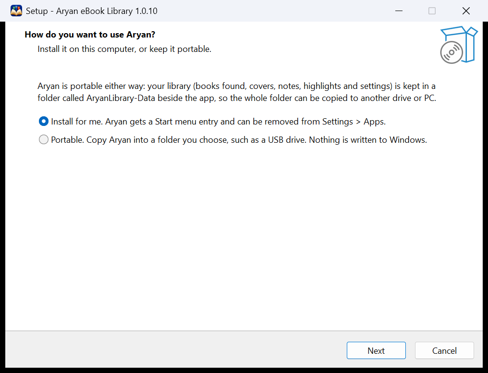
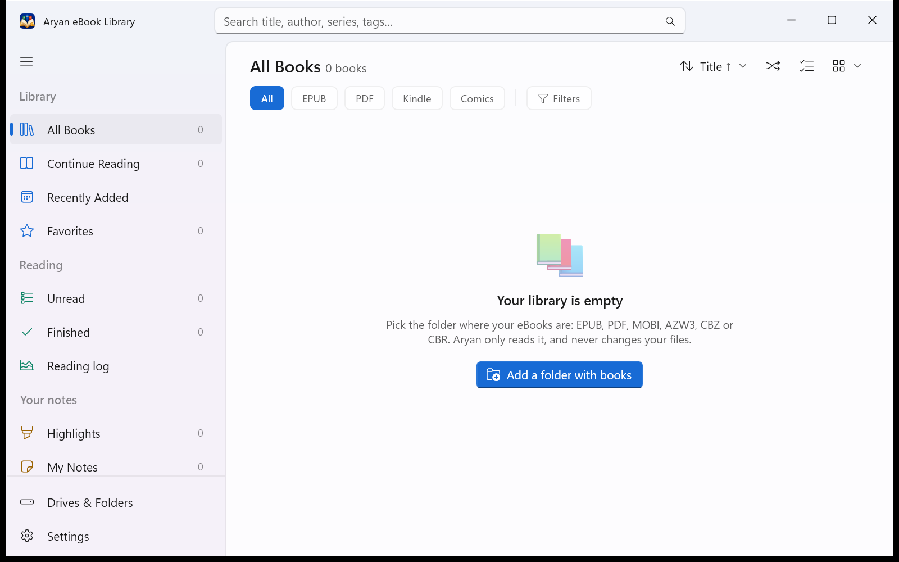

In a nutshell: Aryan builds one library from the folders where your books already are, on any drive, and reads every book in its own reader. It never moves, renames or changes a book file, and it works without the internet.
1. Install Aryan
- Download
AryanEbookLibrary-Setup-<version>.exefrom the latest release. - Run it. Aryan isn't code-signed yet, so Windows SmartScreen may say it doesn't recognise the app. Click More info, then Run anyway.
- Choose how you want to use Aryan, then click Next until it's done.

| Choice | What you get |
|---|---|
| Install for me | Aryan is installed for your Windows account only, so no administrator rights are needed. It gets a Start menu entry and can be removed from Windows Settings > Apps. |
| Portable | Aryan is copied into any folder you pick, a USB drive included, and nothing is written to Windows. Copy the folder to another drive or PC and your whole library goes with it. |
Aryan runs on Windows 10 (version 1809 or later) and Windows 11, on 64-bit PCs. It carries everything it needs, so there is nothing else to install.
Updating later: download the newer Setup and run it on the same folder. Your library is kept, and before a new version changes its database, a copy is saved in AryanLibrary-Data\Backups.
2. Bring in your books

- Click Add a folder with books and pick the folder where your eBooks are. Its subfolders come too.
- Aryan scans the folder. It reads each book's title, author, series and cover, and your books appear as they are found.
Aryan reads EPUB, PDF, MOBI, AZW3, CBZ and CBR. A big collection takes a few minutes the first time; after that, a scan only looks at what changed.
More folders and more drives
Open Drives & Folders at the bottom of the sidebar. Each drive that holds books is a card:
- Add folder on a card adds another folder from that drive, and Add Drive brings in a folder from a drive that isn't there yet.
- Update scans one drive again, and Refresh changes scans every connected drive.
- Remove folder takes a folder's books out of the library. The files themselves stay where they are.
Aryan knows each drive by its hardware ID, so a changed drive letter breaks nothing. When you unplug a drive, its books stay in your library with a small grey dot on the cover, and they open again as soon as the drive is back.
Aryan scans your folders each time it starts, so new, changed and missing books are found by themselves. You can turn that off in Settings > Library. Aryan never watches your folders in the background.
3. Find your way around

The sidebar
| Section | What's in it |
|---|---|
| Library | All Books, Continue Reading, Recently Added and Favorites, plus any shelves you save. |
| Reading | Unread and Finished books, and your Reading log. |
| Your notes | Highlights, My Notes, and My lists. |
| Browse | Your books by Authors, Series and Tags. |
| Tidy up | Duplicates, Missing books and books that Need Details. |
The number beside each item is how many books it holds. At the very top, the Now reading card takes you straight back to your book.
Finding a book
- Search with the box at the top of the window, or press Ctrl+F. It looks through titles, authors, series and tags. Esc clears it.
- All, EPUB, PDF, Kindle and Comics show one kind of book at a time.
- Filters narrow the page by language, year, publisher, your rating, or only the books on connected drives. Save as shelf keeps that view in the sidebar, and it fills itself as books come and go.
- The buttons on the right sort the page, pick a book at random with Surprise me, and change the cover size or switch to a list.
4. Open a book
- Double-click a book to read it. It opens in its own window, at the page where you left off.
- Click once to see its details: cover, description, your rating, notes and more.
- Right-click for everything else: Open, Open with default app, View details, Show in folder, Add to list, and marking it Favorite, Reading or Finished.
Each kind of book has its own reader: PDFs are drawn sharp at any zoom, EPUB, MOBI and AZW3 books flow like a web page, and comics (CBZ, CBR, and EPUBs made only of pictures) run as one long column. If you'd rather use another app for a kind of book, turn it off in Settings > Reading > Open books in Aryan's own reader, and those books open in your default app.
Bought Kindle or Adobe books: books sold with DRM are locked to the shop's own apps. Aryan tells you when a book is locked instead of showing scrambled text. Books without DRM open normally.
5. Read comfortably

In a PDF, EPUB, MOBI or AZW3 book, the toolbar at the top has:
- Contents, a side panel with the book's own table of contents and a Highlights tab.
- Find in book (Ctrl+F), with F3 for the next match.
- The zoom button. In PDFs and comics it zooms, and Fit width is always one click away. In EPUB, MOBI and AZW3 books it sets the text size instead, with Usual size to go back.
- Layout (EPUB, MOBI and AZW3): Scroll reads the whole book as one long page, and the mouse wheel carries you from chapter to chapter. Pages turns like a book: click the left or right margin, or press the arrow keys.
- Page colour: Paper, Sepia or Night.
- Full screen (F11), and Keyboard shortcuts (F1), which lists every key for the book you have open.
Comics keep it simpler: the zoom button, a Fit button (Continuous, Fit width or Fit page), Highlights and notes, full screen and F1.
Want the page all to yourself? In Settings > Reading > Reader toolbar, choose Hide while reading. The toolbar comes back when you point at the top of the page or press Alt.
When you reach the end of a book, Aryan offers to Mark as finished. Ctrl+W closes the book.
6. Look up a word

Right-click an English word while reading a PDF, EPUB, MOBI or AZW3 book and choose Define. You get its meanings from WordNet, with the Myanmar (AKK dictionary) and Hindi meanings right underneath. No internet is needed.
The same menu can Copy the word, or Find it everywhere in the book. To show only one of the two languages, or neither, use Settings > Reading > Define in other languages.
Burmese titles stored in old Zawgyi text, or typed in visual order, are shown as proper Unicode in your library. The files themselves are left alone.
7. Highlights, clips and notes
- Highlight words: select them, and a small bar appears with five colours (Lime, Pink, Orange, Red and Green), a note, copy and delete. You can also right-click a selection and choose Highlight or Highlight with a note...
- Note a page: right-click anywhere on a page and choose Add a note to this page...
- Clip a picture in a PDF: click Highlight an area in the toolbar and drag a box round a diagram, a photo or a scanned paragraph. In comics, drag a box round a panel, or right-click a page to highlight all of it.
- Change one later: click a highlight to change its colour, add a note, copy it or delete it.
Each book's highlights are listed on the Highlights tab of its side panel: click one to jump to it. In the library, the Highlights page gathers them from every book you own, and My Notes gathers your notes. Both can be searched, sorted by book or by date, and exported as Markdown for a notes app or CSV for a spreadsheet.
8. Keep track of your reading
- Every book is Unread, Reading or Finished. Set it from the right-click menu or the book's details, where you can also add the date you finished it.
- Give books a favourite star and your rating, from one to five stars, in their details.
- The Reading log shows your time reading today, this week and all time, your pages this year, the books you finished each month, and a Goal for the year if you set one. Reading now lists your current books, and Up next the next unread book in a series you're reading.
Reading time is counted only while a book is open in Aryan's own reader.
9. Better book details
Aryan reads a book's details from the book itself, from Calibre's metadata.opf when there is one, from the copyright page, and even from the file name. When something is still wrong or missing, click the book once to open its details:
- Edit title, author and series puts your own details in. They are kept beside the book, the file is never changed, and Use the file's details goes back to what the file says.
- Find details online looks the book up on Open Library, Wikidata and Wikipedia, and shows you what it found before anything changes.
To fill gaps for the whole library, turn on Settings > Library > Fill in missing details online. It only fills details that are empty, and sends nothing but a title, author or ISBN. It is off until you turn it on. For even more descriptions and years, you can add a free Google Books key of your own there too.
10. Lists, tags and a tidy library
Collections of your own
- My lists: click New list... under My lists, then drag books onto it or right-click a book and choose Add to list. A book can be on as many lists as you like.
- Tags: add them in a book's details. The Tags page also suggests tags Aryan worked out from your folders, languages and titles, and nothing is added until you say so.
- Shelves: set up a search or some filters, then Save as shelf.
Many books at once
Click the Select books button on the library page and tick the books you want, or press Select all. Then use Edit... for author, series and tags, Mark to set them Reading, Finished, Unread or Favorite, or Find online. Press Done when you've finished.
Tidy up
- Duplicates finds books you have twice and suggests which copy to keep, by your preferred language and format. Nothing is ever deleted.
- Missing lists books whose files weren't found at the last scan. Look for moved files finds them again, and Relink keeps the book's favourite, rating, notes and tags.
- Needs Details lists books with no author, no real cover, or a title that isn't really a title.
- Authors offers to join names that are the same person, such as two spellings of one writer.
11. Your data, backups and a new PC
- Your library, covers, settings and notes live in one folder,
AryanLibrary-Data, beside the app. Settings > Your data > Open data folder shows it. - Your favourites, ratings, reading status, tags, notes, lists and highlights are also kept in two small files beside your books on each drive (
.aryan-library.jsonand.aryan-highlights.json), so they travel with the drive. These are the only files Aryan ever writes near your books. - Export backup... saves all of that in one file, and Restore backup... brings it back.
- Export catalogue... saves every book with its details as a CSV file for a spreadsheet.
Moving to a new PC: with a portable copy, just copy the whole Aryan folder. Otherwise, install Aryan on the new PC and add your folders: your favourites, ratings, notes, lists and highlights come back from the small files beside your books. A backup you exported can be brought in with Restore backup... as well.
12. Handy keys
| Keys | What they do |
|---|---|
| Ctrl+F | Search the library, or find in the book you're reading |
| F1 | Every key for the book you have open |
| Space, Page Down | Down one screen (in a book in Pages layout, the next page) |
| Right, Left | Next or previous page |
| Home, End | First or last page |
| Ctrl+G | Go to a page (in EPUB, MOBI and AZW3 books, a place in percent) |
| Ctrl++, Ctrl+- | Zoom in or out, or larger or smaller text |
| Ctrl+0 | Back to Fit width, or the usual text size |
| Alt+Left | Back after following a link or a jump |
| F11 | Full screen, and Esc leaves it |
| Ctrl+W | Close the book |
13. Questions
Why is it called Aryan?
Aryan (आर्यन) is my son's name; he is one year old. In India and across South Asia it is a common given name, meaning "noble" in Sanskrit and Hindi. The app has nothing to do with the racist misuse of the word in 20th-century Europe, which I reject completely.
Does Aryan change my books?
No. It only reads them. It never moves, renames or edits a book file. Your own details, ratings and notes are kept in Aryan's data folder and in the two small files described in Your data.
Does it need the internet?
No. Reading, word meanings, highlights and everything else work offline. Aryan goes online only if you turn on online details, or click Find details online, and then it sends only a title, author or ISBN. There is no account and no tracking.
A book has a grey dot and won't open
Its drive isn't plugged in. Plug it in and the book opens again, with nothing lost.
I moved or renamed books in File Explorer
The next scan finds them again, with their notes and highlights. If a book still shows on the Missing page, use Look for moved files or Relink.
A book's title or author is wrong
Click the book, then Edit title, author and series, or Find details online. See Better book details.
A Kindle book won't open
It is probably protected with DRM, which only Amazon's apps can open. Aryan says so when it happens. MOBI and AZW3 books without DRM open fine.
Something else went wrong
Aryan keeps a log, aryan.log, in its data folder. Please open an issue on GitHub and describe what happened; the log helps.